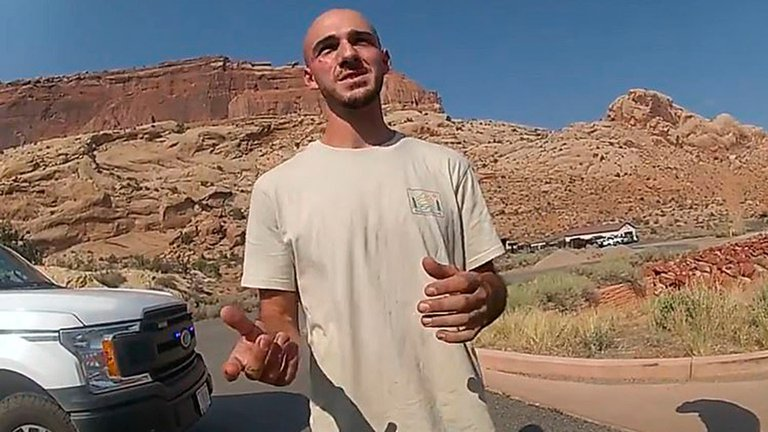

Caso Gabby Petito: un hombre denunció que vio a la joven siendo golpeada por su novio
Brian Laundrie, considerado “persona de interés” en la investigación, habría agredido a la mujer,
según revela un audio de un llamado a la línea de emergencia de Estados Unidos
20 de Septiembre de 2021
"Corrieron por la acera. Él procedió a golpearla, se subió al auto y se fueron‘’, dice el audio
Un audio del 911, la línea telefónica de emergencia de Estados Unidos, capturó a una
persona que llamó para informar sobre un incidente de abuso doméstico que
involucraría a Gabby Petito, la mujer desparecida cuyos restos podrían haberse
encontrado en Wyoming, y su novio, Brian Laundrie, quien la habría abofeteado.
En el audio de la llamada realizada el 11 de agosto y obtenido por Fox, el hombre le
dice al alguacil del condado de Grant que un hombre en una camioneta blanca con
matrícula de Florida abofeteó a una joven.
También menciona que el incidente sucedió ‘por Moonflower’, en referencia a la
Cooperativa Comunitaria Moonflower en Moab, donde Laundrie y Petito pasaron
la noche del 11 de agosto y donde, según los informes, fueron vistos teniendo una
pelea explosiva.
“Estoy justo en la esquina de Main Street junto a Moonflower y estamos
conduciendo y me gustaría informar sobre una disputa doméstica. Matrícula de
Florida, camioneta blanca“, comienza a contar antes de que el oficial le preguntara
qué vio exactamente.
“Simplemente se fueron. Van hacia Main Street. Giraron a la derecha en Main Street
desde Moonflower. Pasamos junto a él, un caballero abofeteaba a la chica‘’, continúa.
“¿La estaba abofeteando?”, pregunta el sheriff. “Sí. Y luego nos detuvimos.
Corrieron por la acera. Él procedió a golpearla, se subió al auto y se fueron‘’, dice
el hombre.

Laundrie, que había dicho que Petito lo había agredido a él, habría abofeteado a la joven, según el hombre que
realizó la denuncia
Poco tiempo después de esa llamada, la pareja fue grabada por la cámara corporal
de un policía, que muestra a la joven de Florida en un estado de angustia tras una
pelea con su novio en una ciudad turística de Utah antes de desaparecer.
El video publicado por el Departamento de Policía de Moab muestra que un oficial
detuvo la camioneta el 12 de agosto por exceso de velocidad. Dentro estaban
Brian Laundrie y su novia, Gabrielle “Gabby” Petito, quien fue reportada como
desaparecida por su familia un mes después.
El video de la cámara corporal muestra a Petito visiblemente angustiada cuando
un oficial se les acercó.
“Hemos estado peleando esta mañana. Algunos problemas personales”, le dice, y
agrega que sufre de un trastorno obsesivo-compulsivo que afecta su
comportamiento.
El video de la cámara corporal muestra a Petito visiblemente angustiada cuando un oficial se les acercó
“Sí, no lo sé, son solo algunos días, tengo un TOC realmente malo, y solo estaba
limpiando y arreglando y me disculpaba con él diciendo que soy tan mala porque
a veces tengo TOC y me frustro”, relató la joven.
Laundrie dice en el video que la pareja se metió en una pequeña pelea que comenzó
cuando él se subió a la camioneta con los pies sucios y dijo que no quería
presentar un cargo de violencia doméstica contra Petito, quien los oficiales
decidieron que era la agresora.
Se ve a Laundrie con rasguños en la cara y el brazo, que le dice a un oficial que
fueron causados cuando Petito ‘estaba tratando de sacarme las llaves’ y ‘me golpeó
con su teléfono’. Cuando un oficial le pregunta a Petito si su novio la golpeó, ella
responde ‘supongo’ y señala su barbilla.
Laundrie admite que la “empujó” durante el altercado. “No voy a presentar nada
porque ella es mi prometida y la amo. Fue solo una pelea. Lamento que haya
tenido que volverse tan público”.
En este momento, Brian Laundrie, considerado “persona de interés” en la
investigación, se encuentra desaparecido y la policía allanó la casa donde reside
con sus padres.